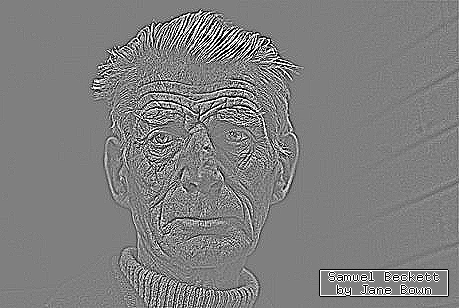
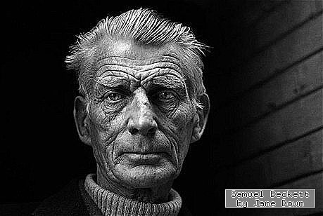
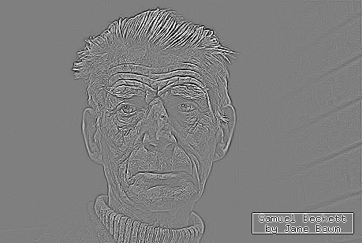
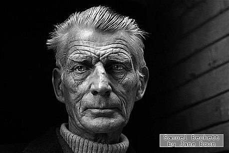
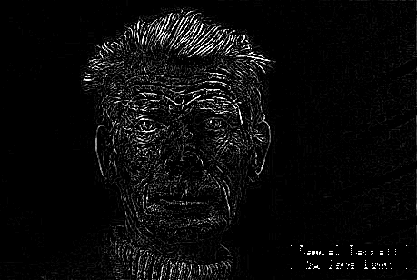
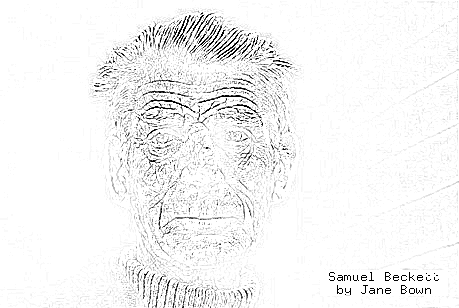
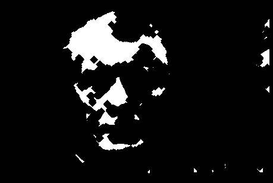

This is one of the best books in image processing:
You should buy several copies, for yourself, your friends and your family; and ask your lab to buy several copies for the library. Or even better, since the editor (whose name I have trimmed from the cover image) is a notorious bully, instead of buying it, download a copy from libgen and send the money directly to the authors.
The book is a collection of independent self-contained chapters written by different authors, all of them famous people from the french school of image processing.
The only critique of this book that I can conceive is that the “practice” part of the title is not really fullfilled. There is not a single line of real computer code displayed in the book. But giving the codes for the hundreds of experiments of a 500 page book is probably too much to ask. The goal of this document is to provide such a code for a small part of the book.
My favourite chapters are 6 and 7:
6. A short tour of mathematical morphology on edge and vertex weighted graphs, Laurent Najman and Fernand Meyer
7. Partial difference quations on graphs for local and nonlocal image processing, Abrerrahim Elmoataz, Olivier Lézoray, Vinh-Thong Ta and Sébastien Bougleux.
And these are the chapters whose implementation I detail below.
The book contains this kind of sentences:
Let \(G=(V,E)\) be a graph and \(\mathcal{H}(V)\) be the Hilbert space of real-valued functions defined on the vertices of \(G\). The space \(\mathcal{H}(V)\) is endowed with the usual inner product \(\left<f,h\right>_{\mathcal{H}(V)}=\sum_{v_i\in V}f(v_i)h(v_i)\), where \(f,h:V\to\mathbf{R}\). Similarly, let \(\mathcal{H}(E)\) be the Hilbert space of real-valued functions defined on the edges of \(G\), \(\ldots\). Now, consider a linear operator between Hilbert spaces \(A:\mathcal{H}(V)\to\mathcal{E}(V)\)...
While these sentences are crystal clear and very appealing to an audience of mathematicians, I have found them to be intimidating when trying to evangelize people to read the book. Thus, I “translate” them into the following kind of language, which is \(100\%\) equivalent:
Consider a graph with \(n\) vertices and \(m\) edges. We will use vectors of length \(n\) and \(m\) to represent functions defined over the vertices or the edges, respectively. We will also use matrices of size \(m\times n\) to represent linear maps between them \(A:\mathbf{R}^n\to\mathbf{R}^m\). In octave/matlab:
n = 100; # number of vertices in the graph m = 200; # number of edges in the graph x = rand(n,1); # define a random function over the vertices A = rand(m,n); # define a random linear map y = A * x; # obtain a function over the edges
This is easier to interpret thanks to the computer code. Of course, linear maps with random coefficients are silly. We will see more interesting examples below.
You would think that to work with graphs on a computer you need some sort of library for graphs. Nothing farther from the truth. What you really need is a library for doing linear algebra. In all the examples here we use octave, but you can translate it easily to python+numpy, which is slightly more verbose.
In what follows we reserve the letters \(n\) and \(m\) for the following meanings
\(n\, =\ \,\) number of vertices in the graph
\(m =\ \,\) number of edges in the graph
For the following graph, we have \(n=5\) and \(m=6\):

\[Z = \begin{pmatrix} 1 & 2 \\ 1 & 3 \\ 2 & 3 \\ 3 & 4 \\ 3 & 5 \\ 4 & 5 \end{pmatrix}_{\small 6\times 2} A = \begin{pmatrix} 0 & 1 & 1 & 0 & 0 \\ 1 & 0 & 1 & 0 & 0 \\ 1 & 1 & 0 & 1 & 1 \\ 0 & 0 & 1 & 0 & 1 \\ 0 & 0 & 1 & 1 & 0 \\ \end{pmatrix}_{\small 5\times 5} B = \begin{pmatrix} -1& 1 & 0 & 0 & 0 \\ -1& 0 & 1 & 0 & 0 \\ 0 &-1 & 1 & 0 & 0 \\ 0 & 0 &-1 & 1 & 0 \\ 0 & 0 &-1 & 0 & 1 \\ 0 & 0 & 0 &-1 & 1 \\ \end{pmatrix}_{\small 6\times 5}\]
There are five basic matrices associated to a graph, for which we will always use the same letters:
\(Z\ \,=\ \,\) adjacency list, of size \(m\times 2\), list of vertex index pairs
\(A\ \,=\ \,\) adjacency matrix, of size \(n\times n\), logical matrix of joined vertices
\(B\ \,=\ \,\) incidence matrix, of size \(m\times n\), list of input/output vertices of each edge
\(C\ \,=\ \,\) centering matrix, of size \(m\times n\), defined as \(C=\frac{1}{2}|B|\)
\(L\ \,=\ \,\) Laplacian matrix, of size \(n\times n\), defined as \(L=-B'B\)
It is very important to understand now the meaning of the matrices \(Z,A,B\). The matrix \(Z\) is the easiest to type by hand in a computer, but it is not very useful for doing algebra with it. All the other matrices are fundamental linear operators over functions defined on the graph. Each of these fives matrices, alone, determines completely the graph (modulo the numbering of the edges, in the case of \(A\) and \(L\)).
The matrices \(A\), \(B\) and \(C\) satisfy the identity: \(A=2C^TC-B^TB/2\). This allows to compute \(A\) from \(B\). To recover \(B\) from \(A\) we must decide on an ordering for the edges.
The following octave functions allow to convert between each representation:
function A = graph_adjacency_from_list(Z)
n = max(Z(:)); # number of vertices
U = sparse(Z(:,1), Z(:,2), 1, n, n); # directed graph
A = U + U'; # symmetrization
endfunction B = graph_incidence_from_adjacency(A)
[i,j] = find(triu(A)); # find the (i,j) positions
n = rows(A); # number of vertices
m = rows(i); # total number of edges
B1 = sparse(1:m, i, 1, m, n); # matrix for destination vertices
B2 = sparse(1:m, j, 1, m, n); # matrix for source vertices
B = B1 - B2; # signed incidence matrix
endfunction Z = graph_list_from_adjacency(A)
[i,j] = find(triu(A));
Z = [i j];
endfunction A = graph_adjacency_from_incidence(B)
A = max(-B'*B,0); # equal to (abs(B'*B) - B'*B) / 2
endTypically, in the applications, you can often build \(B\) directly so that you do not really need these functions. From \(B\), the other matrices are easily computed if needed by:
L = -B'*B;
A = L > 0;
C = abs(B)/2;The following table summarizes the language that we will use everywhere.
| \(n\) | number of vertices in the graph |
| \(m\) | number of edges in the graph |
| \(u\in\mathbf{R}^n\) | scalar field \(u\) |
| \(\mathbf{v}\in\mathbf{R}^m\) | scalar field \(\mathbf{v}\) |
| \(B:\mathbf{R}^n\to\mathbf{R}^m\) | gradient |
| \(-B^T:\mathbf{R}^m\to\mathbf{R}^n\) | divergence |
| \(L:\mathbf{R}^n\to\mathbf{R}^n\) | Laplacian |
| \(C:\mathbf{R}^n\to\mathbf{R}^m\) | centering operator (from vertices to edges) |
| \(C^T:\mathbf{R}^m\to\mathbf{R}^n\) | centering operator (from edges to vertices) |
| \(C^TC:\mathbf{R}^n\to\mathbf{R}^n\) | smoothing operator |
The most important notion is that the matrix \(B\) is called the gradient. It is a linear operator that maps scalar fields (vectors of lenght \(n\)) into vector fields (vectors of length \(m\)). This definition is used for an arbitrary graph, but it makes a lot of sense when the graph is the grid of an image, because in that case the gradient corresponds exactly to the gradient computed using finite differences.
The pixels of an image are arranged naturally in the shape of a grid. Here, for example, you have the grid of a \(4\times 3\) image:

Here you see that the graph has \(n=12\) vertices and \(m=17\) edges. In general, for an image of size \(w\times h\), the graph will have \(n=wh\) vertices and \(m=(w-1)h+(h-1)w\) edges. The matrix \(A\) of such a graph is build by the following octave code
function A = grid_graph(w, h) # build a grid graph WxH
px = sparse(1:w-1, 2:w, 1, w, w); # path graph of length W
py = sparse(1:h-1, 2:h, 1, h, h); # path graph of length H
U = kron(py,speye(w)) + kron(speye(h),px); # kronecker sum
A = U + U'; # symmetrization
endThis works because the grid graph is the product graph of two paths, and the adjacency matrix of a product graph is the Kronecker sum of their matrices.
The graph defines just the domain of an image. We still need the data. As a sample image, we will use the amazing portrait of Samuel Beckett by Jane Bown:

beckett.png
The easiest operator to understand is the Laplacian. The following octave code thus reads an image, applies the laplacian operator, and saves the result.
x = imread("i/beckett.png"); # load input image
[w, h] = size(x); # extract dimensions
x = double(x(:)); # flatten image data into a vector
A = grid_graph(w,h); # build graph adjacency matrix
L = A - diag(sum(A)); # Laplacian matrix
y = L * x; # Laplacian of the original image
z = uint8(reshape(127-2*y,w,h)); # contrast change and reshape
imwrite(z, "beckett_lap.png"); # save output image beckett_lap.png
The typical color coding for looking at a laplacian is such that gray=zero, white=negative, black=positive. As expected, the laplacian enhances the edges and textures while setting the constant regions to zero.
By substracting the laplacian to the image, we “sharpen” the original image.
y = x - L * x; # image minus laplacian
imwrite(reshape(uint8(y),w,h), "beckett_sharp.png"); # save output image beckett_sharp.png
Conversely, we can smooth the image by adding multiples of the laplacian to it, iteratively. This amounts to approximation the solution of the heat equation on the graph:
S = speye(w*h) + L/4; # smoothing operator
y = S^8 * x; # run 8 smoothing steps
imwrite(reshape(uint8(y),w,h), "beckett_smooth.png"); # save output image beckett_smooth.png
The morphological operations of dilation and erosion are defined for functions over graphs, as the maximum and minimum value of neighboring vertices. The other morphological operations are all defined in terms of dilation and erosion:
| \(u\) | function defined on the vertices of the graph |
| \(d(u)\) | dilation (max value among neighboring vertices) |
| \(e(u)\) | erosion (min value among neighboring vertices) |
| \(d(e(u))\) | opening |
| \(e(d(u))\) | closing |
| \(d(u) - u\) | inner morphological gradient |
| \(u - e(u)\) | outer morphological gradient |
| \(\frac{1}{2}(d(u) - e(u))\) | centered morphological gradient |
| \(d(u) + e(u) - 2u\) | morphological laplacian |
| \(u - d(u) - e(u)\) | morphological sharpening (image minus laplacian) |
| \(u - d(e(u))\) | top hat (image minus opening) |
| \(e(d(u)) -u\) | bottom hat (closing minus image) |
Due to the inequalities \(e(u)\le u\le d(u)\), we can see that all these operations (except the laplacian) produce positive images. The morphological gradients are also called upwind and downwind derivatives.
Thanks to sparse matrices, the implementation of these operations is very easy. The crucial matrix here is the structuring element matrix \(E\), defined as the adjacency matrix plus the identity. The implementation of the dilation operator is thus
function y = dilation(E, x)
y = full(max(diag(x)*E))'; # maximum value along sparse rows
endNotice that this only works for positive-valued images (otherwise the "max" is perturbed by the zeros in the sparse matrix, which are not ignored). The implementation of the erosion works by computing the dilation of an image in the negative:
function y = erosion(E, x)
m = 1 + max(x);
t = m - x;
y = m - dilation(E, t);
endAnd the implementation of all the operations consists simply in copying the table above:
function y = opening(E,x) y = dilation(E,erosion(E,x)); end
function y = closing(E,x) y = erosion(E,dilation(E,x)); end
function y = egradient(E,x) y = x - erosion(E,x); end
function y = igradient(E,x) y = dilation(E,x) - x; end
function y = cgradient(E,x) y = (dilation(E,x) - erosion(E,x)) / 2; end
function y = mlaplacian(E,x) y = dilation(E,x) + erosion(E,x) - 2*x; end
function y = msharpen(E,x) y = x - mlaplacian(E,x); end
function y = tophat(E,x) y = x - opening(E,x); end
function y = bothat(E,x) y = closing(E,x) - x; endThe following code tests all these operations:
x = imread("i/beckett.png");
[w,h] = size(x);
x = double(x(:));
A = grid_graph(w,h);
E = A + speye(w*h); # structuring element
imwrite(uint8(reshape( dilation(E,x) ,w,h)), "beckett_dil.png");
imwrite(uint8(reshape( erosion(E,x) ,w,h)), "beckett_ero.png");
imwrite(uint8(reshape( opening(E,x) ,w,h)), "beckett_ope.png");
imwrite(uint8(reshape( closing(E,x) ,w,h)), "beckett_clo.png");
imwrite(uint8(reshape( 2*igradient(E,x) ,w,h)), "beckett_igrad.png");
imwrite(uint8(reshape( 2*egradient(E,x) ,w,h)), "beckett_egrad.png");
imwrite(uint8(reshape( 2*cgradient(E,x) ,w,h)), "beckett_cgrad.png");
imwrite(uint8(reshape( 127-2*mlaplacian(E,x) ,w,h)), "beckett_mlap.png");
imwrite(uint8(reshape( msharpen(E,x) ,w,h)), "beckett_msharp.png");
imwrite(uint8(reshape( 6*tophat(E,x) ,w,h)), "beckett_top.png");
imwrite(uint8(reshape( 255-6*bothat(E,x) ,w,h)), "beckett_bot.png");beckett_dil.png
beckett_ero.png
beckett_ope.png
beckett_clo.png
beckett_igrad.png
beckett_egrad.png
beckett_cgrad.png
beckett_mlap.png
beckett_msharp.png
beckett_top.png
beckett_bot.png
It is an interesting exercise to look at these images and try to describe the changes verbally. For example: dilation enlarges the light objects, while erosion enlarges the dark ones. The opening removes the small bright spots and ridges, while closing removes the small dark spots and valleys. All the three gradients look like the euclidean norm of the linear gradient. The inner and outer gradients are very sharp, but are not centered, each one biased towards the dark or the light side of the discontinuities. The centered gradient is the average of the two, which is centered but less sharp. The morphological laplacian is the difference of the inner and outer gradients; it looks almost exactly like the linear laplacian despite being a combination of nonlinear operations. The morphological sharpening is similar to the linear one, based on the reverse heat equation. The top-hat keeps only the britght spots and ridges (those that were removed by the opening), and set to zero the rest of the image. The bottom-hat keeps only the dark spots and valleys (those that were removed by the closing), and sets to zero the rest of the image; thus the bottom-hat produces an image in the negative, that must be negated to visualize it correctly.
As a final comment on graph-based morphology, if you want to do morphology on binary images, the implementation can be much simpler. For example, the dilation of a mask \(m\) can be computed simply by multiplying by powers of the adjacency matrix:
x = imread("i/beckett.png"); # load image
[w,h] = size(x); # extract dimensions
m = double(x(:) > 66); # flatten and binarize
A = grid_graph(w,h) + speye(w*h); # structuring element
y = A^6 * m; # apply 6 dilations
y1 = y > 0; # dilation
y2 = !(y < max(y)); # erosion
f = 255 / max(y); # gray-scale factor
imwrite(logical(reshape(m,w,h)), "beckett_bin.png"); # save binary mask
imwrite(uint8(reshape(y,w,h)*f), "beckett_a6.png"); # save gray-scale
imwrite(logical(reshape(y1,w,h)), "beckett_a6_t0.png"); # save dilated mask
imwrite(logical(reshape(y2,w,h)), "beckett_a6_tm.png"); # save dilated maskbeckett_bin.png
beckett_a6.png
beckett_a6_t0.png
beckett_a6_tm.png
(section in preparation)